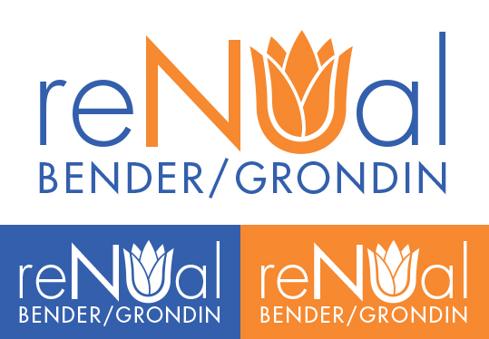

ReNUal Campaign
2017, for Bender/Grondin: ReNUal
I was asked to be one of the two design leads for my friends' campaign for Northeastern student body president and vice president. So far, that has entailed designing their logo, business cards, and
campaign platform document. More work will be done soon for their flyers and social media pages.

Their campaign is focused around rejuvenating a number of Northeastern's current practices and streamlining a lot of services. With this in mind, the design team and I came up with the idea for a flower in the logo. After a lot of attempts, we came up with a logo that has a sleek look and is recognizable as both the name ReNUal and a flower.
Typeface used: Futura Std